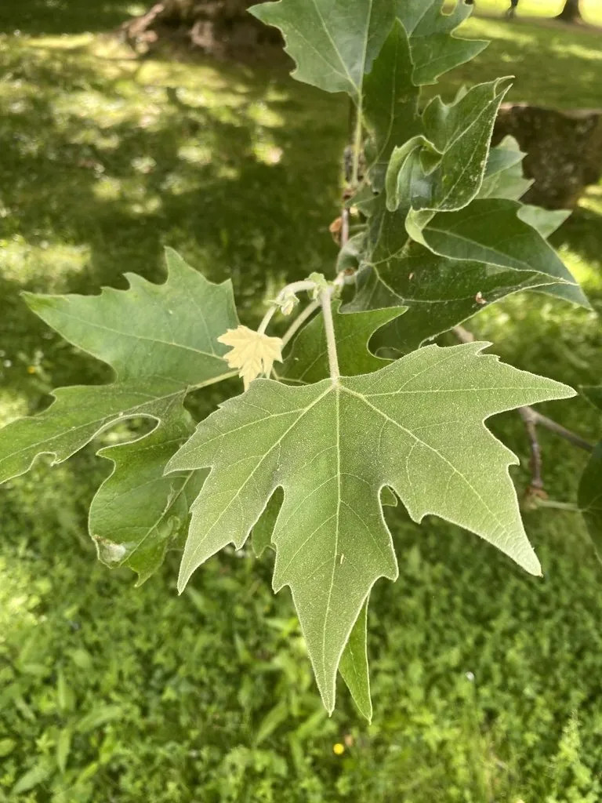

乔木 · 植物界
悬铃木 Platanus × acerifolia

由一球悬铃木与三球悬铃木杂交而成的落叶大乔木，树冠宽阔、叶大荫浓，是世界著名的行道树，常被误称为“法国梧桐”。
- 分类
- 门被子植物门纲木兰纲目山龙眼目科悬铃木科属悬铃木属
- 栖息环境
- 温带与亚热带城市街道、公园与庭院，耐寒耐修剪，适应性强
- 地理分布
- 杂交种，世界各地广泛栽培；中国南北城市普遍种植
- 保护级别
- 暂无评估；中国未列入国家重点保护野生植物名录
物种志
悬铃木为落叶大乔木，高可达 30 m，树冠宽阔；树皮灰绿色或灰白色，呈不规则片状剥落，剥落后露出浅色内皮，形成斑驳花纹。叶片宽卵形，掌状 5–7 裂，裂片边缘具粗齿，叶柄长。花单性同株，头状花序球形；果实为球形聚合果，通常 2 个生于一总柄上，故称“二球悬铃木”，果序悬挂枝头越冬，成熟后散出带毛种子。
悬铃木是杂交种，由原产北美的北美悬铃木（一球悬铃木）与原产欧亚的三球悬铃木杂交而成，适应性广，耐寒、耐修剪，对城市烟尘与有害气体抗性强。中国各地广泛栽培作行道树与庭园树，上海、南京等城市的老街道上常见高大的悬铃木。木材可供家具与细木工用；树皮与叶可入药。因其叶似梧桐、又由法国人引入，民间常称“法国梧桐”，但它与真正的梧桐、泡桐都不是同一种植物。
形态与习性
- 株高可达 30 m，树冠宽阔
- 花期4–5 月，头状花序球形
- 果期9–12 月，果序通常 2 个一串
- 光照喜光，不耐长期荫蔽
- 水分喜湿润，可耐短期水湿
- 土壤深厚肥沃、排水良好的壤土
- 主要用途行道树与庭荫树、木材制家具与细木工
趣味知识
- 悬铃木的果序通常 2 个一串挂在枝头，因此又称“二球悬铃木”。
- 悬铃木树皮呈片状剥落，露出浅色内皮，形成斑驳的花纹。
- 民间常把悬铃木叫作“法国梧桐”，但它与真正的梧桐并非同种植物。
- 悬铃木由一球悬铃木与三球悬铃木杂交而成，是世界著名的行道树。